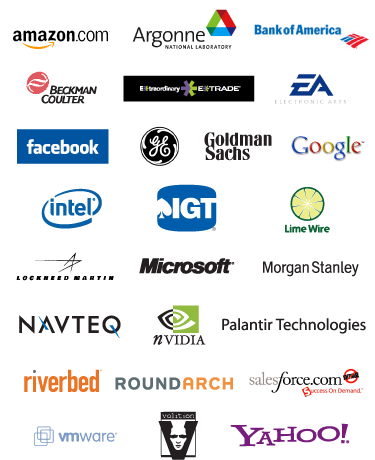

| Job Fair | Focused and Intimate |
|---|---|
|

The Reflections | Projections Job Fair will be held from 10:00 AM to 4:00 PM on Friday, October 12, 2007 at the University of Illinois at Urbana-Champaign campus in the new Thomas M. Siebel Center for Computer Science. The job fair features 25 premier computing and technology employers offering internships and full-time employment. Please contact corporate@acm.uiuc.edu for more information. Employers confirmed thus far for 2007 include Amazon.com, Argonne National Laboratory, Bank of America, Beckman Coulter, E*Trade Financial, EA, Facebook, General Electric, Goldman Sachs, Google, Intel, International Game Technology, Lime Wire, Lockheed Martin, Microsoft, Morgan Stanley, Navteq, NVIDIA, Palantir Technologies, Riverbed Technology, Roundarch, Salesforce.com, VMware, Volition, and Yahoo!. |